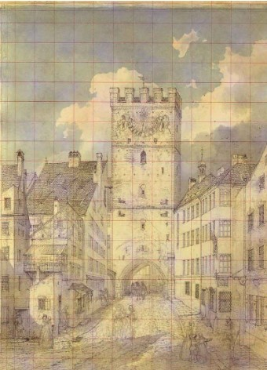
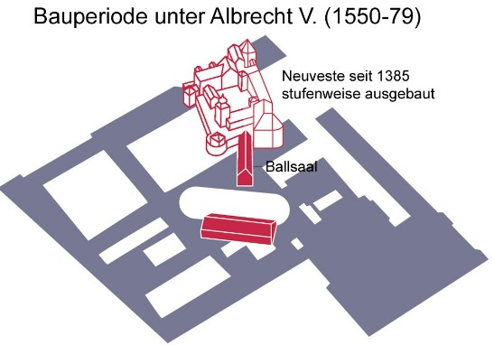
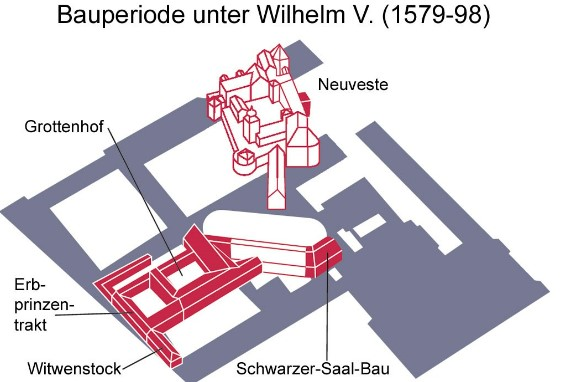
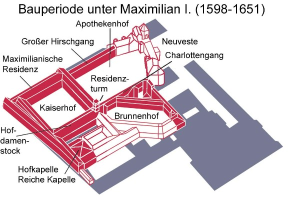

"Milestones" der Bergsteigerischen Erschließung
Einführung
Im Folgenden werden die "Milestones" der Bergsteigerischen Erschließung genauer erläutert und verortet.
Weiterer Einführungstext HIER.
Mont Ventoux im Jahr 1336
Dichter Francesco Petrarca bestieg den Mont Ventoux (1909 m) in der Provence am 26. April 1336.

...
Erstbesteigung des Mont Aiguille im Jahr 1492
Antoine de Ville im Dienst von König Karl VIII.
Live-Webcam-Foto of Muenchen:

...
Erstbesteigung des Mont Blanc
Mont Blanc (4810 m, höchster Gipfel der Alpen und Westeuropas) gilt allgemein als Geburtsstunde des Alpinismus.



...
Station 4: Der Kögelmühlbach
Der Kögelmühlbach
Infos und Bilder
...
Station 5: Die Frauenkirche
Infos und Bilder
...
Station 6: Der Marienplatz
Info und Bilder ...
Station 7: Der Bau der zweiten Stammstrecke
Infos und Bilder
...